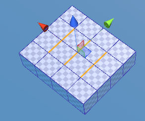
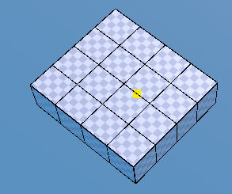

Eraser Tool ¶
{kind=link}
There are two modes of deleting elements. One is Immediate Mode and the other is Edit Mode.
Immediate Mode- Select elements at first and then click onEraserbutton to remove them.
Edit Mode- SelectEraser Toolfirst with no selected elements and then click on an edge which you want to remove.Note
Edit Modeisn’t available in the Lite version.
When you try to erase an edge shared by two coplanar polygons, only the edge will be removed and the two shared polygons will be merged. Otherwise, the two polygons will be removed, too.
In a case of a vertex, all the polygons sharing the vertex will be removed. If it is a polygon, only the polygon will be taken away.
- 

Immediate Mode- Click onEraserbutton after selecting several elements.- 
Edit Mode- At fist enterEraser Tooland then click on an edge.
{kind=link}
{kind=link}
{kind=link}
As of UModeler 2.7.25, the ability to erase shared edges of two adjacent triangles that are not on the same plane has been added. The usage is the same as how to erase the existing edge.¶